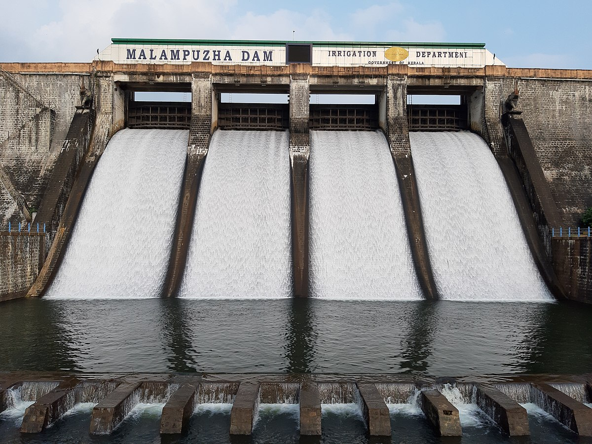
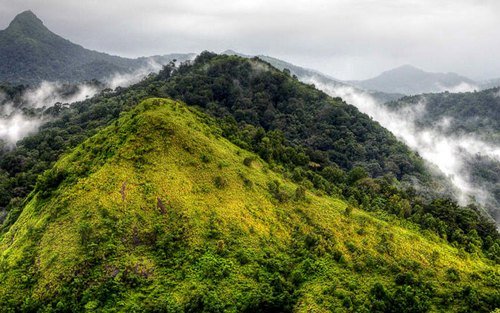

The quaint town of Palakkad in central Kerala boasts of picturesque landscape, tranquil scenery and clear backwaters. Also known as Palghat, Pallakad is located near a wide low pass in the Western Ghats mountain ranges. Palakkad is the land of Palmyras and Paddy Fields and is famous as the chief granary of Kerala.
Palakkad gets its name from pala trees which once dominated the area. This is the area which links Kerala to Tamil Nadu and perhaps does so in a cultural sense too, since the language spoken in the villages here is Tamil, unlike the rest of the state where Malayalam is prevalent.
Palakkad is known for the ruins of Tipu Sulthan's Fort, four dams and one of the first amusement parks of Kerala - Fantasy Park. Some other locations that can be visited in the area include the Palakkad Fort, Silent Valley National Park, Pothundy Dam, Jain Temple, Dhoni waterfalls, Walayar Dam etc.
One of the largest reservoirs of Kerala, Malampuzha Dam is located near Palakkad in South India. It is surrounded by the Western Ghats on all side. Malampuzha Dam is a combination of a masonry dam with a length of 1,849 meters and an earthen dam with a height of 220 meters. The dam is 355 feet high and crosses the Malampuzha River, which is a tributary of Bharathappuzha, which is Kerala's second largest river. The dam has many attractions nearby like the rock garden, ropeway, amusement park and visitors often enjoy boating here as well.
The Silent Valley National Park, with its lush green forests and beautiful views of the rich flora and fauna, is a popular destination for nature as well as wildlife lovers all across the globe. Spread across an area of 89 square kilometres, the Silent Valley National Park is located in the Kundali Hills of the Western Ghats in Kerala in southern India. With its long, detailed history and the unique status of a rainforest, this national park is indeed a sight to visit. The well-planned Safari and the beautiful stop-overs around the park only make a trip to this part of Kerala more worthwhile.
Parambikulam Tiger Reserve and Wildlife Sanctuary, located in the Palakkad district of Kerala, is best known for its constant efforts to preserve the dwindling tiger population. Surrounding hills and river along with flora and fauna make it the perfect place for a trek and safari.The Parambikulam Tiger Reserve is the most protected ecological terrain of the Western Ghats. Endowed with peninsular vegetation and wildlife, this destination has minimum human interference. Some of the most prized animals found here include lion-tailed macaques, Bengal tigers, Indian leopards, wild boars, sloths, king cobra, Travancore kukri snake, and the Western Ghats flying lizard among others.